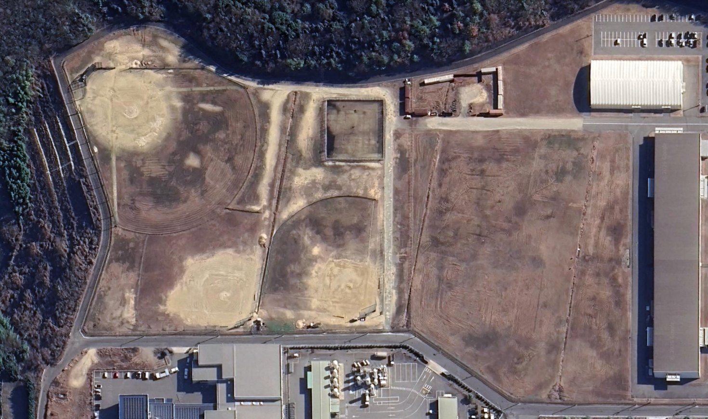

HERO'S CUP 2026
株式会社 古川製作所presents
すべての子どもに「ヒーローになる瞬間」を。
勝敗だけでなく、仲間を励まし、全力で走り、挑戦した姿を称える大会です。
| 大会名 | 株式会社 古川製作所 presents 第1回 HERO's CUP in 三原 |
|---|---|
| 日程 | 2026年11月28日（土）・29日（日） |
| 会場 | 株式会社 古川製作所グランド（3面使用） 広島県三原市沼田西町小原200-65 |
| 参加チーム | 広島県内で活動する小学生軟式野球 16チーム（登録リーグは問いません） |
| 登録選手数 | 1チーム 9名〜20名 |
| ベンチ入り | 1試合 最大18名（下記「ベンチ入りと出場のルール」を参照） |
| 形式 | A・Bの2ブロックのトーナメント＋交流戦。負けたチームも交流戦にまわり、全チーム1日2試合 |
| 表彰 | Aブロック 優勝・準優勝／Bブロック 優勝・準優勝／HERO賞 |
※1日2試合あるため、2日とも同じ決まりです（各日の1試合目に出なかった選手は、その日の2試合目にスタメン）。
第1グランドのバックネット裏に大会本部と救護ブースを設け、救護士がいます。持病・アレルギー・服薬など伝えておくべきことがある選手は、当日の受付で必ず運営スタッフにお伝えください。
A-①1日目 9:30
福木フィールズ少年野球クラブ
三原ファイヤーズ
A-②1日目 10:50
福山ウエスト野球クラブ
幸崎パイレーツスポーツ少年団
A-③1日目 12:20
本郷南方ライナーズ
キタヒロファイターズ
A-④1日目 13:40
阿品スカイヤーズ
中筋スポーツ少年団軟式野球部
B-①1日目 9:30
三原レッドアロー少年野球クラブ
宮内アベンジャーズ
B-②1日目 10:50
大野友星
三原レッキーズ少年野球クラブ
B-③1日目 12:20
中之町イーグルス
三原ジュニア少年軟式野球クラブ
B-④1日目 13:40
段原レッドイーグルス
三原ベアーズ
| 1日目 11月28日（土） | ||
| 8:20 | 集合・整列 全16チーム、第1グランド内に集合 | 第1G |
| 8:30 | 開会式 全チーム参加 | 第1G |
| 9:30 | A-①／B-① | 第1G・第2G |
| 10:50 | A-②／B-②／交流戦① | 全3面 |
| 12:20 | A-③／B-③／交流戦② | 全3面 |
| 13:40 | A-④／B-④／交流戦③ | 全3面 |
| 15:00 | 交流戦④ | 第1G |
| 17:00 | 完全撤去 | 全体 |
| 2日目 11月29日（日） | ||
| 9:30 | A'-①／B'-① | 第1G・第2G |
| 10:50 | A'-②／B'-②／交流戦⑤ | 全3面 |
| 12:20 | 決勝A／決勝B／交流戦⑥ | 全3面 |
| — | 表彰式・閉会式（優勝・準優勝・HERO賞） | 第1G |
| 17:00 | 完全撤去 | 全体 |
負けたチーム同士が戦う、正式な試合です。全員出場・HERO審査・ヒーローインタビューも同じように行います。
| 日 | 時刻 | 試合 | 対戦 | 会場 |
|---|---|---|---|---|
| 1日目 | 10:50 | 交流戦① | A-① の敗者 × B-① の敗者 | 第3G |
| 1日目 | 12:20 | 交流戦② | A-② の敗者 × B-② の敗者 | 第3G |
| 1日目 | 13:40 | 交流戦③ | A-③ の敗者 × B-③ の敗者 | 第3G |
| 1日目 | 15:00 | 交流戦④ | A-④ の敗者 × B-④ の敗者 | 第1G |
| 2日目 | 10:50 | 交流戦⑤ | A'-① の敗者 × B'-① の敗者 | 第3G |
| 2日目 | 12:20 | 交流戦⑥ | A'-② の敗者 × B'-② の敗者 | 第3G |

第3グランド テント（主テニス場） 駐車場A 駐車場B 第1グランド アップ可能エリア 第2グランド トイレ 大会本部・救護ブース配置は目安です。当日は会場の案内と運営スタッフの誘導に従ってください。
| 会場名 | 株式会社 古川製作所グランド（3面使用） |
|---|---|
| 住所 | 広島県三原市沼田西町小原200-65 |
| 駐車場 | 駐車場A・駐車場B（運営スタッフの誘導に従ってください） |
| 設備 | トイレ／アップ可能エリア／大会本部・救護ブース（第1Gバックネット裏） |
| テント | 主テニス場の中（ペグ打ちはできません。重しで風対策をしてください） |
| 飲食 | 会場内で比治山冷凍カレーの販売を予定しています |
| 撤去 | 17時までに完全撤去 |
| 主催 | HERO's CUP 実行委員会 |
|---|---|
| 実行委員長 | 安部 友裕（株式会社 HAKI pro） |
| 企画・運営 | 下定 弘和（株式会社 BRAVE UP） |
| 会場協力 | 株式会社 古川製作所 |
| 大会サイト | https://haki-pro.com/heros-cup/ |
※天候・会場の事情などにより内容を変更する場合があります。変更は大会サイトと参加チームへの連絡でお知らせします。